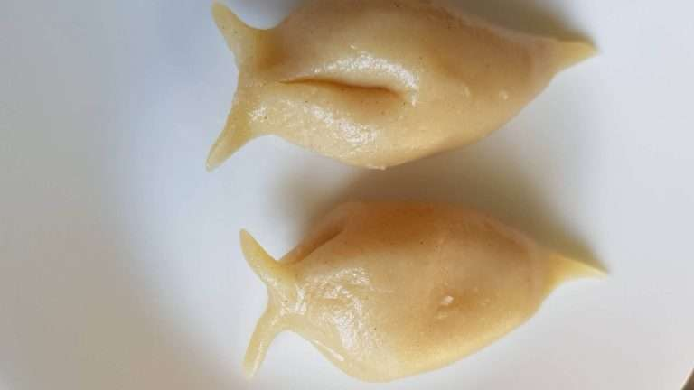

Yomari is a Newari food eaten during the festival of Yomari Punhi in Nepal. It signifies the month of Poush in the Nepal Era Calendar which falls in Purnima (a full moon day). It is also known by a name Ya-Mari. 'Ya' means like and 'Mari' means delicacy. It is also prepared during special occasions like birthdays and baby showers. It is also a very popular Nepalese food. Yomari is a steamed dumpling with a filling of sweet ingredient 'Chhaku' (made from jaggery or molasses or palm sugar). Leftover Yomari can also be a great alternative for the breakfast.